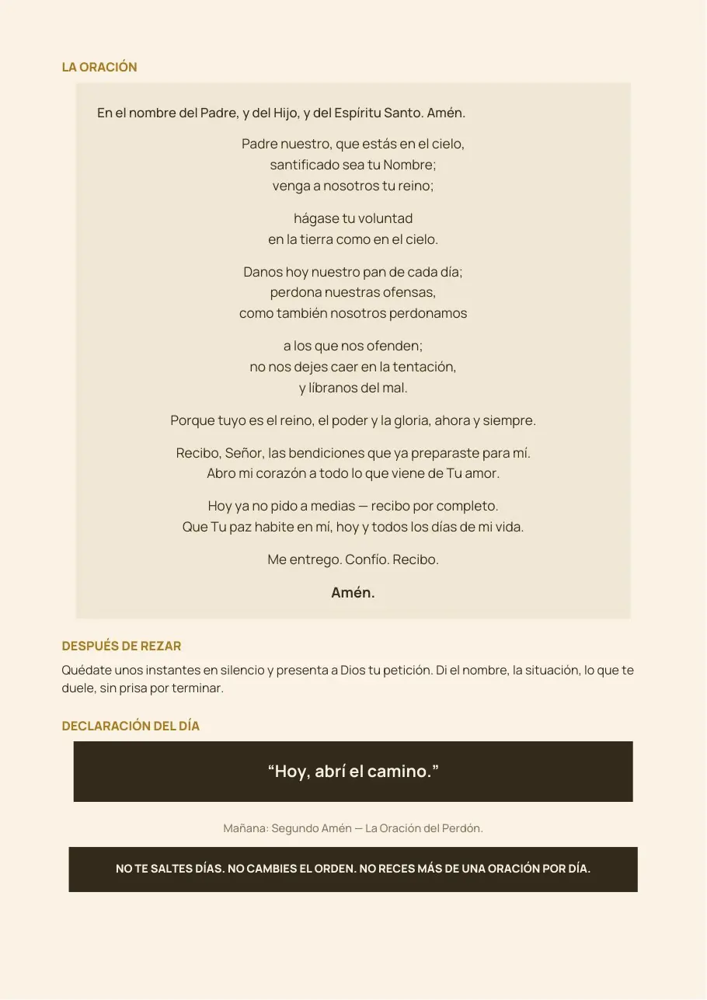
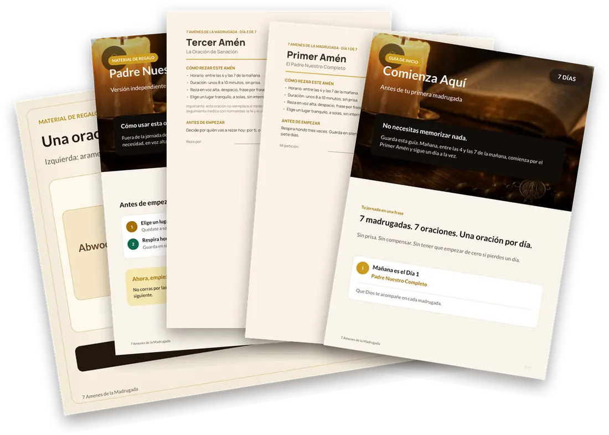

Quieres hablar con Dios, pero el día no te deja
- Rezas con prisa, entre una tarea y otra, y sientes que no llegas a Dios.
- Te acuestas con la cabeza llena: los hijos, la salud, las cuentas.
- Empiezas a rezar con muchas ganas… y a los pocos días lo dejas.
- Quieres rezar, pero no sabes por dónde empezar ni qué decir.
Si te reconoces en alguna de estas frases, no estás sola. Y no te falta fe: te falta un camino sencillo para seguir, un día a la vez.
El silencio antes de que la casa despierte
Antes de que empiece el ruido del día, hay un silencio que no existe en ningún otro momento. El Evangelio de San Marcos cuenta que Jesús se levantaba de madrugada, cuando todavía estaba oscuro, y se iba a un lugar solitario para orar (Mc 1,35).
7 Amenes de la Madrugada te ayuda a aprovechar ese silencio: una oración corta, con un enfoque claro, cada madrugada, durante siete días. Sin memorizar nada. Sin tener que saber "rezar bonito".
Cuatro pasos, unos 10 minutos por día
Abre la oración del día
Está en tu celular. Todo viene escrito, paso a paso.
Entre las 4 y las 7 de la mañana
En un lugar tranquilo. Si ese horario no es posible, reza en cuanto despiertes.
Reza en voz alta, sin prisa
La oración, un momento de silencio y la declaración del día.
Mañana, el siguiente Amén
Una oración por día. ¿Perdiste un día? Continúas desde donde te quedaste. No empiezas de cero.
Los 7 Amenes, día por día
Cada madrugada tiene un enfoque. Solo necesitas ocuparte del día en que estás.

El Padre Nuestro Completo
Para abrir la jornada, despacio, palabra por palabra.
La Oración del Perdón
Para soltar heridas y culpas antiguas, con los demás y contigo misma.
La Oración de Sanación
Para presentar a Dios tu salud o la de alguien que amas.
La Oración de Liberación
Para nombrar aquello que te ata y decidir romper con ello.
La Oración de la Prosperidad
Para presentar a Dios tu trabajo y tus cuentas, pidiendo claridad y disciplina.
La Oración de la Paz
Menos palabras, más silencio y descanso.
La Oración de la Alianza
Para entregar y sellar la semana, cubriendo a tu familia.
Así es cada oración

- Cómo rezar este Amén: horario, duración y lugar.
- Antes de empezar: cómo preparar el corazón.
- La oración completa, escrita para rezar en voz alta.
- Después de rezar: un momento de silencio con Dios.
- La declaración del día, una frase para llevar contigo.
Letra grande y clara, para leer en el celular o imprimir.
Todo lo que necesitas para tus 7 madrugadas

- Guía "Comienza aquí" (PDF): cómo prepararte, las reglas de la jornada y las dudas más comunes.
- Las 7 oraciones de la jornada (7 PDF), una por día.
- De regalo: el Padre Nuestro Completo (PDF), para rezar cuando quieras.
- De regalo: "Una oración, dos lados" (PDF): el Padre Nuestro en arameo y en español, lado a lado.
- Acceso inmediato, por 12 meses, para leer en el celular o imprimir.
Pago único. No es una suscripción.
Menos de US$ 4 por madrugada.
Pago seguro procesado por Whop · Garantía de 7 días
garantía
Empieza sin riesgo
Reza tus primeras madrugadas. Si en los primeros 7 días sientes que no es para ti, escríbenos y te devolvemos el 100% del valor. No necesitas explicar el motivo.
Lo que este producto no es
- No reemplaza al médico, a los medicamentos ni a ningún tratamiento. Las oraciones caminan junto a tu tratamiento, nunca en su lugar.
- No promete milagros, curas ni dinero. Es una guía para rezar con constancia y atención.
- No es una iglesia ni una parroquia, y no pide donaciones. Es un material digital de oración, creado para acompañar tu fe.
- No incluye audio ni video: son textos para rezar.
Tus dudas, respondidas
¿Cómo recibo el material?
Después de pagar, recibes un correo de "7 Amenes de la Madrugada via Whop". Entra en whop.com o en la app de Whop con el mismo correo de la compra. Ahí están la guía "Comienza aquí" y el Primer Amén.
¿Es católico?
Sí. Son oraciones cristianas en la tradición católica, que empiezan con la señal de la cruz.
¿Necesito saber rezar o tener mucha fe para empezar?
No. La guía te orienta paso a paso, un día a la vez.
¿Y si no puedo despertar entre las 4 y las 7?
Reza en cuanto despiertes. La constancia importa más que el horario perfecto.
Perdí un día. ¿Tengo que empezar de nuevo?
No. Continúa al día siguiente desde donde te quedaste. No hagas dos oraciones el mismo día.
¿Puedo rezar por otra persona?
Sí. En la Oración de Sanación y en la de la Alianza puedes presentar a Dios a quien amas.
¿Hay cobros mensuales?
No. Es un pago único de US$ 27.
¿Por cuánto tiempo tengo acceso?
12 meses desde la compra. Puedes descargar los PDF y guardarlos.
¿Y si pido el reembolso?
Dentro de los 7 días te devolvemos el 100%, y el acceso al material se cierra.
Tu primera madrugada puede ser mañana
Siete oraciones. Unos minutos por día. Un camino sencillo para volver a rezar con calma.
Quiero empezar mis 7 madrugadasUS$ 27 · pago único · acceso inmediato · garantía de 7 días